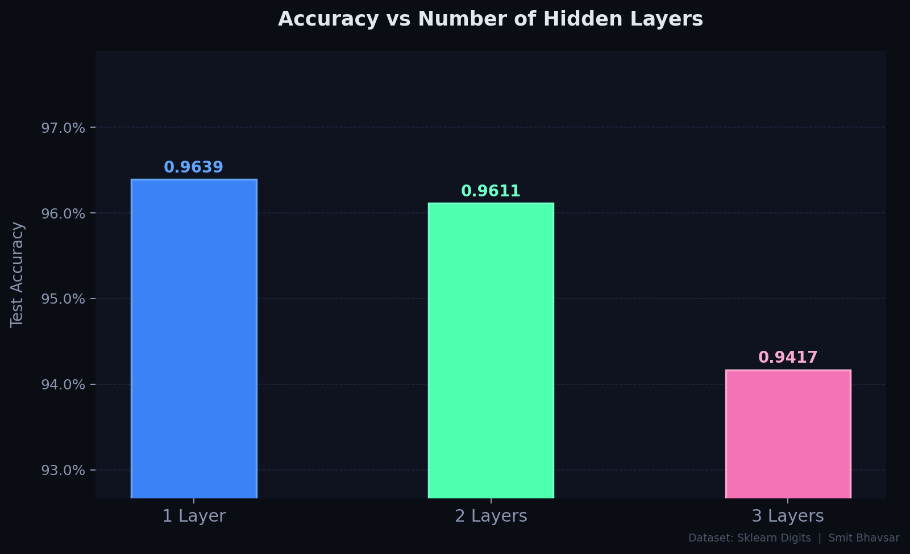
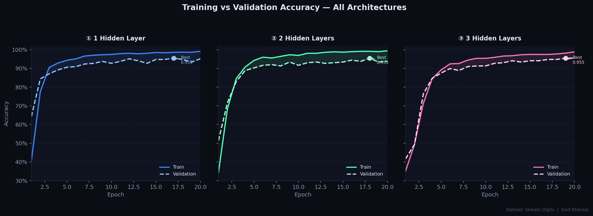

What Are We Even Talking About?
If you've ever wondered how your phone recognises your face or how spam filters work, the answer usually involves a neural network. At a basic level, a neural network is a system loosely inspired by the human brain — it takes some input, passes it through layers of calculations, and produces an output (like "this is a cat" or "this email is spam").
A Multilayer Perceptron (MLP) is the simplest flavour of a fully-connected neural network. It has three types of layers:
- Input Layer — receives the raw data (e.g. pixel values of an image)
- Hidden Layers — where the actual learning magic happens
- Output Layer — produces the final prediction
The hidden layers are the most interesting part. Each one learns to detect different patterns — early layers might pick up simple edges, while deeper layers recognise more complex shapes. This is why the number and size of hidden layers directly affects how smart (or dumb) the model turns out to be.
Simplified MLP architecture — input travels right through each layer to produce a prediction.
What This Project Investigates
Core Question
How does changing the number of hidden layers in an MLP affect its ability to classify handwritten digits correctly?
What We're Testing
Three architectures: 1 hidden layer, 2 hidden layers, and 3 hidden layers — trained on the exact same dataset under the same conditions.
How We Measure
We compare classification accuracy on test data and plot training loss curves to see not just who wins, but how and why.
Big Takeaway Goal
Understand the real-world trade-off between model depth, performance gains, and the risk of overfitting.
How We Set It Up
The Dataset — Digits
We used the Digits dataset from Scikit-learn — a classic benchmark that contains 1,797 images of handwritten digits (0–9). Each image is 8×8 pixels, giving us 64 features per sample. The goal is to correctly classify what digit each image shows. It's small enough to train quickly but complex enough to make a proper comparison between architectures.
Preprocessing — Getting the Data Ready
Before feeding data into any model, it needs to be cleaned and standardised. We did two key things:
- Normalisation — pixel values (originally 0–16) were scaled to a range of 0 to 1. This helps the model train faster and more consistently, since large raw values can make gradients behave unpredictably.
- Train/Test Split — the data was split 80/20, meaning 80% was used for training and 20% was held back purely for evaluation. The model never sees the test set during training.
- One-Hot Encoding — the target labels (0–9) were converted into one-hot vectors. For example, digit "3" becomes [0,0,0,1,0,0,0,0,0,0]. This is the format neural network output layers expect.
Model Setup — Shared Configuration
All three models used the same base configuration so the comparison is fair. Each model was trained with the ReLU activation function in hidden layers, a Softmax output for multi-class classification, Adam optimiser, and cross-entropy loss. The only thing that changed between models was the number of hidden layers.
Architectures Tested
1 Hidden Layer
Input(64) → Dense(128) → Output(10)
The simplest version. A single hidden layer with 128 neurons. Good baseline but may lack capacity to learn complex patterns.
2 Hidden Layers
Input(64) → Dense(128) → Dense(64) → Output(10)
Adds a second layer with 64 neurons. More capacity to learn hierarchical features without dramatically increasing training time.
3 Hidden Layers
Input(64) → Dense(128) → Dense(64) → Dense(32) → Output(10)
The deepest model. Can theoretically learn richer representations — but also the most prone to overfitting on a small dataset.
What Actually Happened
After training all three models under identical conditions, here's what we found — and frankly, some of it was a bit surprising.


Why Did This Happen?
Why Deeper = Better (Up to a Point)
Each hidden layer gives the model a new level of abstraction. Layer 1 might learn simple things like "there's a vertical line here". Layer 2 might combine that to recognise "this looks like part of a loop". Layer 3 might put it all together to say "this is an 8". More layers genuinely help with complex patterns — but only if the dataset is big enough to support all those extra parameters.
What Is Overfitting?
Overfitting is when a model gets so good at memorising the training data that it performs worse on new, unseen examples. Think of it like a student who memorises past exam papers but struggles when the actual exam has slightly different questions. In our case, Model C showed early signs of this — its training accuracy kept climbing while validation accuracy started to dip.
Trade-offs to Consider
Adding layers isn't free. More layers mean more parameters, longer training times, and higher risk of overfitting. For small datasets like Digits (only ~1,800 samples), a 2-layer model strikes the best balance. On a massive dataset like ImageNet, a 3 or even 50-layer network would be totally fine — and often necessary.
Regularisation as a Fix
If we wanted to safely use the 3-layer model, we could add Dropout (randomly disabling neurons during training) or L2 regularisation (penalising large weights). These techniques keep deeper models honest and prevent them from over-relying on any single feature in the training data.
What Did We Learn?
This project set out to answer a simple question: does adding more hidden layers actually make an MLP perform better? The short answer is yes — but only up to a point.
Going from 1 to 2 hidden layers gave us a clear accuracy boost. The model gained the ability to learn hierarchical features, which made digit classification noticeably more reliable. But pushing to 3 layers on a small dataset didn't continue that trend — instead, we started to see the early warning signs of overfitting.
Key Takeaways
More hidden layers improve performance — but only when the dataset is large enough to justify the extra complexity.
Overfitting is a real risk with deeper networks on small datasets. Always monitor both training and validation metrics.
Architecture choices should be driven by the problem and the data — not the assumption that bigger is always better.
Regularisation (dropout, L2) is the practical tool for making deeper networks safer and more generalisable.
The Bigger Picture
Bias in Training Data
Even though the Digits dataset is clean and balanced, real-world ML datasets often aren't. If a model is trained mostly on data from one demographic or context, it will perform poorly — or unfairly — on underrepresented groups. Digit recognition sounds harmless, but the same MLP principles power facial recognition and hiring algorithms, where bias causes genuine harm.
Transparency and Explainability
Deep networks are often called "black boxes" — even their creators can't always explain exactly why a prediction was made. In critical applications like healthcare diagnostics or loan decisions, explainability isn't optional. It's a responsibility. Simpler models (like 1-layer MLPs) are far more interpretable, and that transparency has real value.
Responsible Use of AI
Powerful ML models come with power to misuse. Systems built on these architectures can be used for surveillance, misinformation, or manipulation. As machine learning practitioners — even at the student level — it's worth developing the habit of asking: What is this model for? Who does it affect? Could it cause harm?
Environmental Cost
Training large neural networks consumes enormous amounts of energy. While a small experiment like this has minimal footprint, it's worth being mindful that scaling up — say, to hundreds of GPUs training for weeks — has real environmental consequences. Efficient architecture choices are both good engineering and good practice for the planet.
Project Code
smitbhavsar / mlp-hidden-layers-study
Complete source code including data preprocessing, all three model architectures, training scripts, and result visualisations. Feel free to fork, experiment, and break things.
View on GitHub →Sources & Further Reading
- (2016). Deep Learning. MIT Press. deeplearningbook.org ↗
- (2011). Scikit-learn: Machine Learning in Python. Journal of Machine Learning Research, 12, 2825–2830. scikit-learn.org ↗
- (2015). TensorFlow: Large-Scale Machine Learning on Heterogeneous Systems. tensorflow.org/guide/keras ↗
- (1998). The MNIST Database of Handwritten Digits. yann.lecun.com ↗
- (2015). Neural Networks and Deep Learning. Determination Press. neuralnetworksanddeeplearning.com ↗